Det finns 2 sätt att installera plugin på.
Efter att du har gjort någon utav ovanstående går du till Tillägg och letar upp pluginets namn och klickar på Aktivera. CM skapar följande tabeller i din wordpressdatabas:
och följande rader i tabellen wp_options om du använder version 0.1-0.3
För senare versioner än 0.3, sparas inställningarna i en array. Följande rad skapas då i wp_options tabellen:
CM har en egen meny i admin vilket dyker upp längst ner i menykolumnen.
Under inställningar kan du se vilken version du har av CM och bestämma om admin ska få mail när en ny registrering kommer in. Det är även här som du avinstallerar CM från wordpress, dvs rensar bort tabellerna från databasen och de inställningar sparade i wp_options.
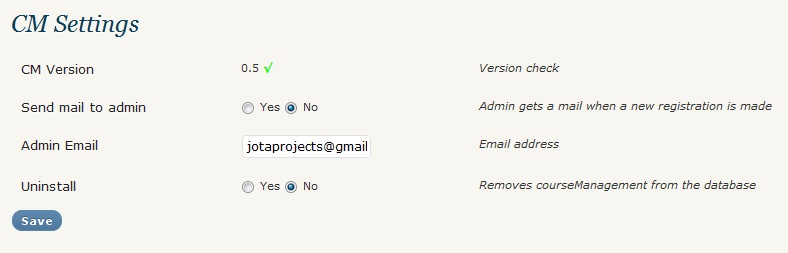
Under menyalternativet Kurser får du en överblick över de kurser som du har lagt till.
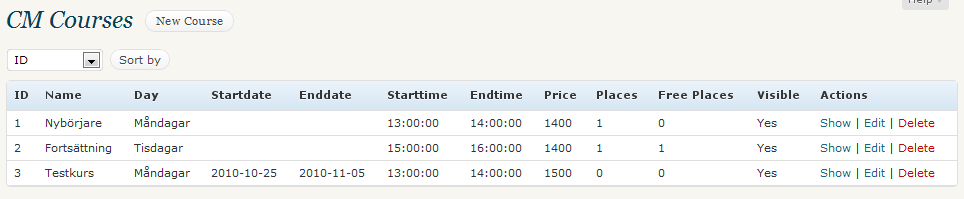
Du kan lägga till kurs via CM-menyn genom att klicka på Ny Kurs eller klicka på länken Ny Kurs i kursöverblicken.
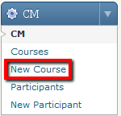
På sidan Ny Kurs skriver du den information som du vill lägga till. Här kan du välja om kursen ska vara tillgänglig eller inte genom att välja Ja eller Nej vid Synlig.
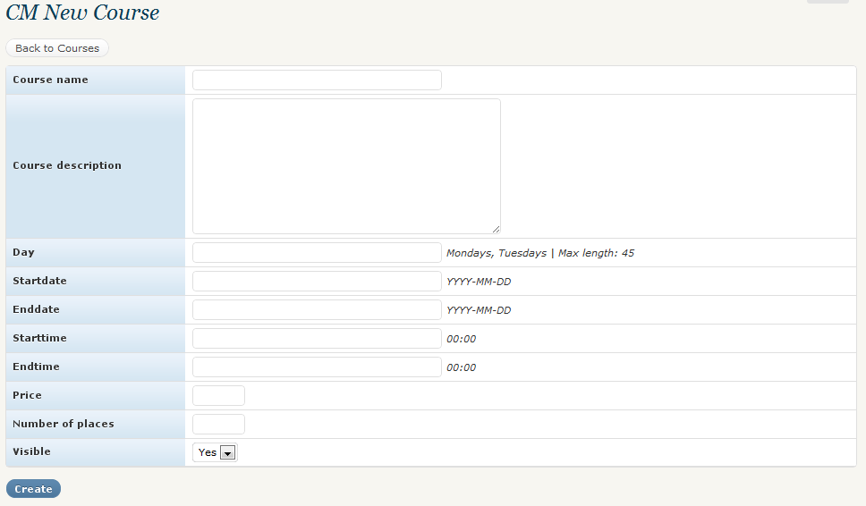
När du väljer att visa kurs får du en mindre överblick på den valda kursen och du kan se vilka deltagare som har anmält sig.

Det är också här som du tar bort en deltagare från en kurs om de inte längre önskar att delta i kursen.
Här redigerar du den valda kursen ifall någon information behövs uppdateras eller om något är fel.
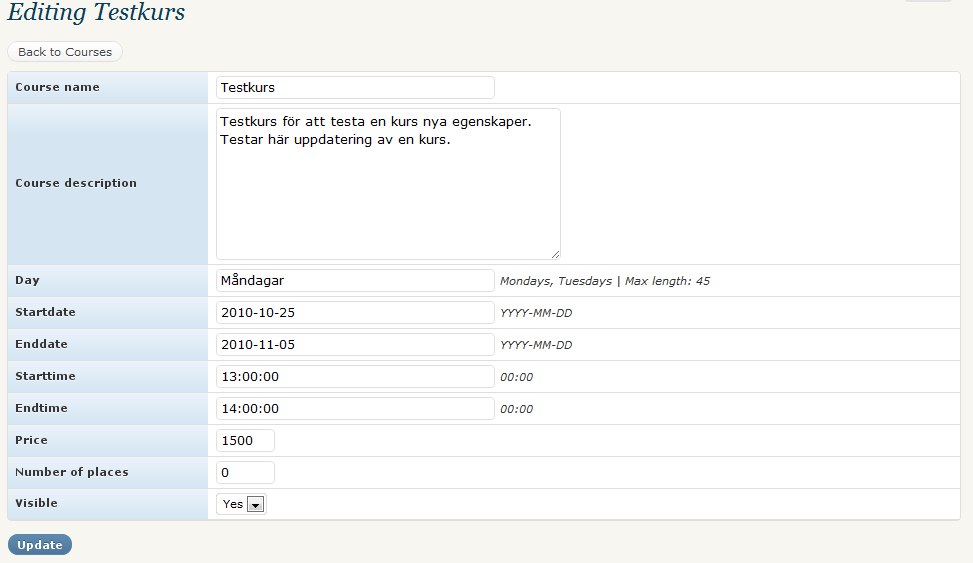
För att ta bort en kurs klickar du på länken Ta bort. Då får du en dialogruta som frågar ifall du verkligen vill ta bort kursen. Klicka Ok för att ta bort kursen helt och hållet, annars Avbryt.

För att visa kurserna på din hemsida, skapar du först en ny sida i wordpress. Därefter i editorn skriver du in <!--CMOVERVIEW--> i HTMLvyn där du önskar att kursöverblicken ska synas.

Detta ersätts sedan med kursöverblick när du tittar på din hemsida. Stilen varierar beroende på hur du har satt upp din stilmall.
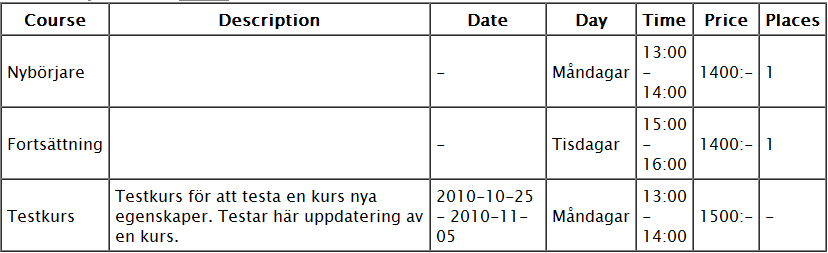
För visa registreringsformuläret skapar du en ny sida eller redigerar en befintlig. I editorn skriver du in <!--CMFORM--> där du vill visa registreringsformuläret.

Välj att visa sidan och du ska se att formuläret dyker upp. Stilen varierar beroende på hur du har satt upp din stilmall.
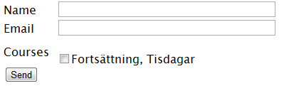
För att CAPTCHA ska vara tillgängligt måste du ha tillägget Really Simple Captcha. Ladda ner det här http://wordpress.org/extend/plugins/really-simple-captcha/, installera och aktivera det. Då får du en CAPTCHA-image och ett textfält i registreringsformuläret.
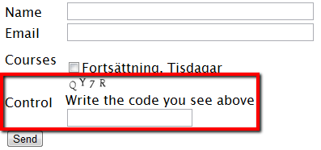
När du har fått några deltagare visas de under Deltagare i CM-menyn. Härifrån kan du sedan visa, redigera och ta bort en deltagare.

Från och med version 0.3 av CM har du möjlighet att lägga till nya deltagare via admin. Klicka antingen på länken i överblicken för deltagare eller i adminmenyn, Ny Deltagare.

En enkel överblick över vald deltagare. Du ser vilka kurser deltagaren har anmält sig till och namn och e-post.
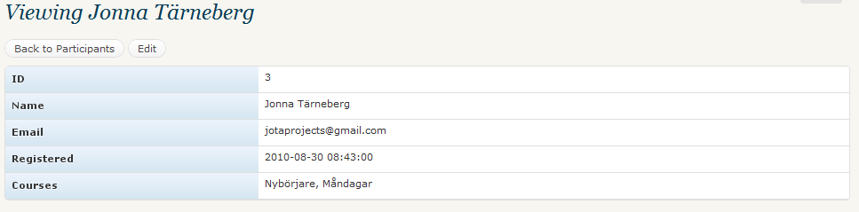
Redigera gör du enkelt via att klicka på länken Redigera vid önskad deltagare. Då får du möjlighet att redigera namn, e-post, registreringsdatum och ändra ifall deltagaren inte önskar delta i en utav kurser och vice verse.
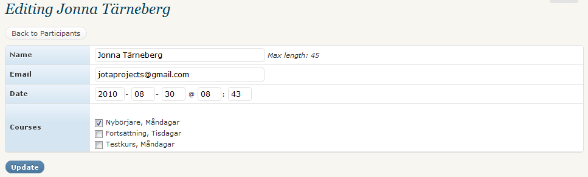
Klicka på länken Ta bort för att ta bort en deltagare helt och hållet. Du får upp en dialogruta där du ska bekräfta om du vill ta bort deltagaren eller inte. Klicka på Ok för att ta bort eller Avbryt för att gå tillbaka.
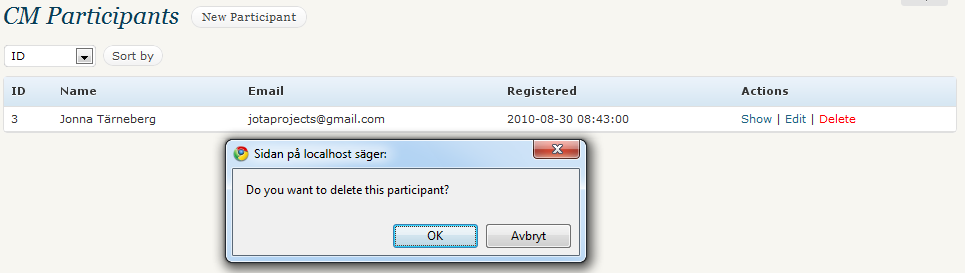
Under kursöverblicken har du möjlighet att endast ta bort deltagare från kursen om denna inte önskar delta längre. Här tas inte bort själva deltagaren utan endast anmälningen till kursen. För att ta bort en deltagare helt och hållet läs ovanstående punkt.
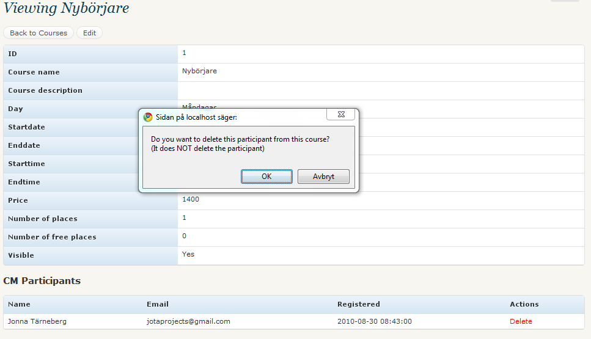
Om du vill stila kursöverblicken och registreringsformuläret på en wppage, kan du använda följande klasser:
Till exempel:
Jag la till följande css till det aktiva temats stilmall (Jag använde det klassiska temat):
.cm_tbl_regform {
width: 100%;
font-size: 11px;
margin: 20px 0;
}
Resultet ser du nedan:
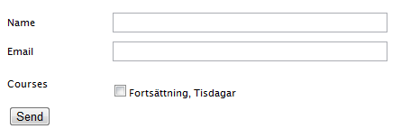
För att stila kursöverblicken la jag till:
.cm_tbl_courseoverview {
width: 100%;
font-size: 12px;
margin: 20px 0;
border: 1px solid #ccc;
}
.cm_tbl_courseoverview thead {
text-align: left;
background: #999;
}
.cm_tbl_courseoverview td {
border: 1px solid #ccc;
Resultatet:
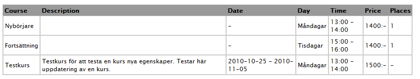
När du önskar avinstallera hela CM går du till Inställningar för CM och klickar i Ja vid rubriken Avinstallera och klickar på Spara. Då tas tabeller och inställningar bort. OBS! Detta rensar bort allting från kurser till deltagare.
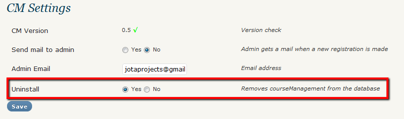
Därefter avaktiverar du det under Tillägg och sedan väljer Ta bort för att ta bort mappen och filerna med CM.
CM är översatt till följande språk: